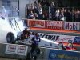
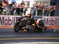
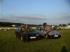

Summer Sedici Spectacular September 8th - 10th 2000
This meeting took place at Santa Pod drag strip. This is in Northants which I had
hoped would attract more owners due to it's more central location.

September 8th - 10th was the FIA European drag racing championships.
Friday was a night time qualifying session. Saturday
and Sunday were various competitions including: Top Fuel, Top
Methanol, Pro Stock and Drag Bike racing.
I went last year for Bonfire Night and
was taken back by the pure power these cars have, not to mention the insanity of the
drivers. Your heart will shake with the noise. We are talking 6000 bhp, 0 - 100 mph in
under 1 second, yes one second. They will do a 1/4 mile in about 5 seconds and hit nearly 300 mph
in that time. To put this into perspective a very fast motor bike takes 11 seconds to cover
the same distance and gets up to about 130 mph.

I went on Saturday morning and watched the racing all day.
The weather was glorious sunshine. The racing lived up to my expectations,
the top fuel cars have to be seen and felt to be believed. I camped overnight
after listening to various car owners having a few sound off competitions!!

Ian Grist and
Richard Ellingham arrived in
Ian's car on Sunday morning. We watched the racing and wondered around the
pits all day. The turnout for the meeting was a bit dissapointing but those who
turned up really enjoyed the experience. Sorry about the poor quality of the pictures
they are stills from the video I took during the weekend.